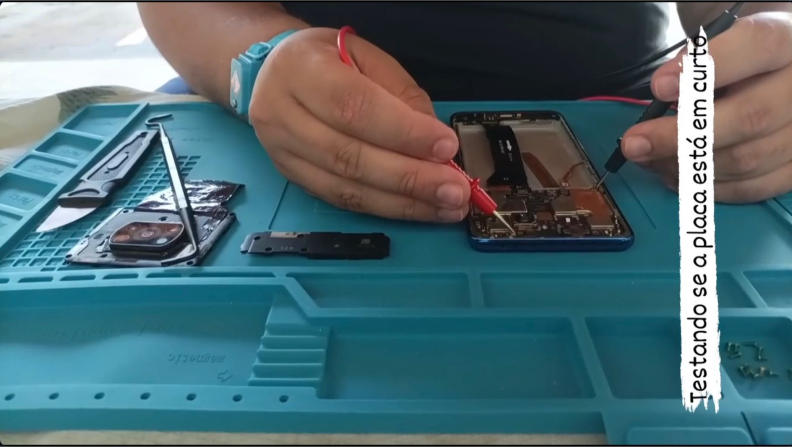
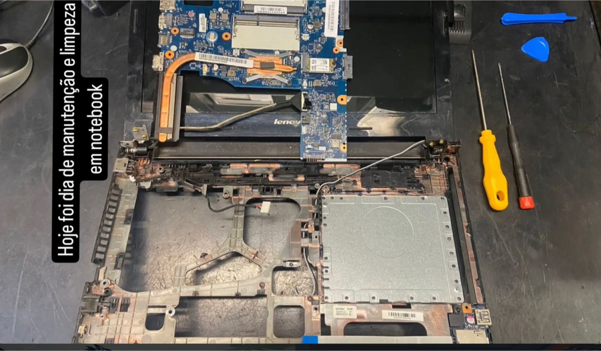
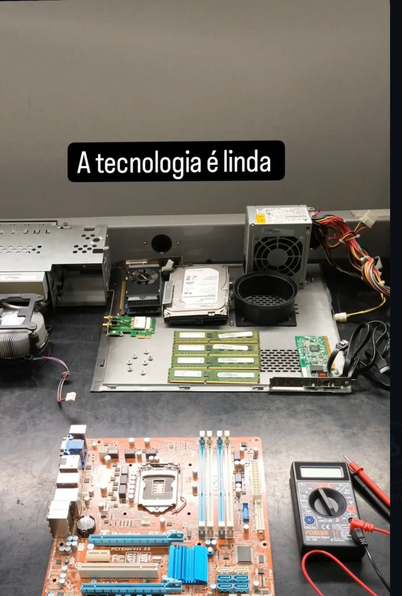
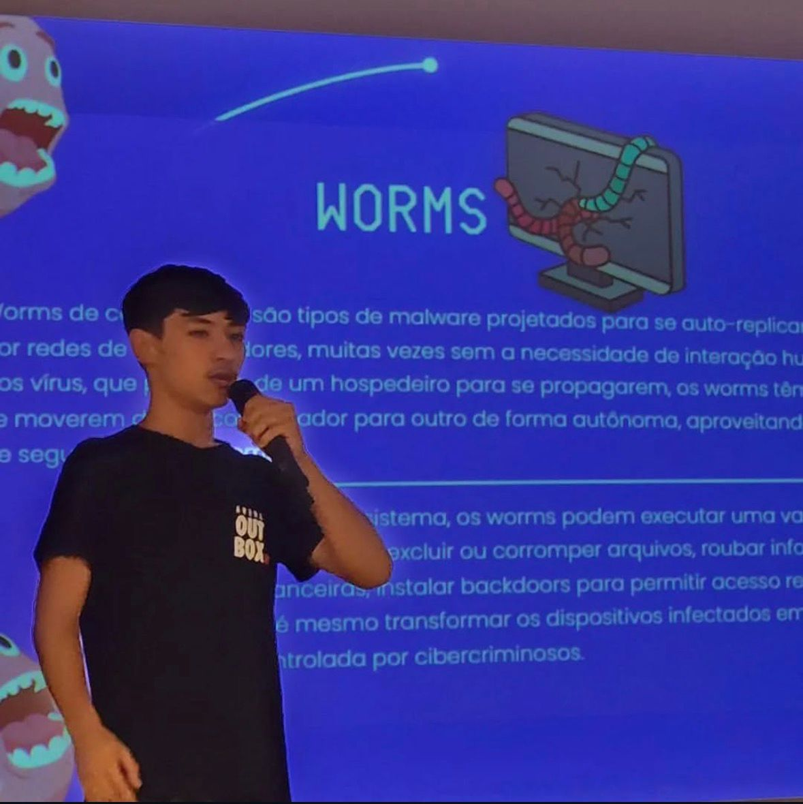
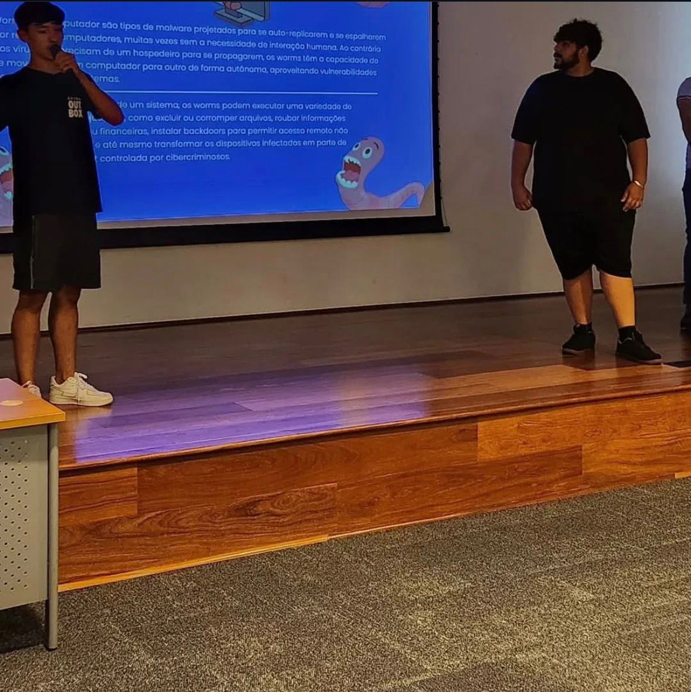

Quem somos?
A TriadTec se posiciona não apenas como uma fábrica de software, mas como uma consultoria de estratégia digital. O foco principal é ajudar grandes empresas a navegarem pela complexidade da transformação tecnológica, garantindo que o investimento em TI gere resultados tangíveis no "mundo real".

🛡️ Nosso Compromisso com você é
Na intersecção entre a tecnologia de ponta e a estratégia de negócios, reafirmamos nosso dever de transformar desafios complexos em soluções seguras e resilientes. Nosso compromisso com a TriadTec e seus parceiros baseia-se em três pilares inegociáveis:".
- 1. Cultura DevSecOps e Segurança Nativa Não enxergamos a segurança como uma etapa final, mas como o alicerce de todo código escrito. Nosso compromisso é integrar práticas de segurança desde o design (Security by Design), garantindo que a agilidade do desenvolvimento caminhe lado a lado com a proteção de dados e a integridade dos sistemas.
- 2. Evolução Técnica Contínua Em um cenário de ameaças e tecnologias em constante mutação, nos comprometemos com o aprendizado incessante. Seja no domínio do C#, na automação com Python ou na análise crítica de infraestruturas em Kali Linux, nossa meta é oferecer sempre o estado da arte em conhecimento técnico para antecipar soluções.
- 3. Entrega de Valor Real Nosso foco não é apenas a tecnologia pela tecnologia, mas o impacto direto na eficiência e na continuidade do negócio. Comprometemo-nos a atuar com a mentalidade de Purple Team: unindo a visão ofensiva e defensiva para construir ambientes digitais cada vez mais robustos e confiáveis.

]❤️ Por que tudo isso? O que move nosso amor:
Tudo isso existe porque o que nos une à Triad é um propósito compartilhado. Aqui está o porquê de toda essa entrega e o que alimenta o nosso "amor" pelo que fazemos:.
- A Paixão pelo Desafio: O nosso amor nasce da adrenalina de resolver o "insolúvel". É aquela sensação única de encontrar uma vulnerabilidade antes que ela se torne um problema, ou de ver um sistema complexo rodar liso depois de noites de dedicação.
- A Confiança Mútua: Amar o que fazemos na Triad significa acreditar que cada linha de código e cada camada de segurança protege algo maior: o sonho de alguém, os dados de uma empresa, a continuidade de um negócio. É um compromisso de lealdade com o futuro.
- O Brilho nos Olhos pela Evolução: Esse amor é alimentado pela curiosidade. É o prazer de dominar uma nova ferramenta, de trocar conhecimento no café (ou no Meet) e de sentir que, na Triad, nunca paramos de crescer. É o orgulho de pertencer a um time que não se contenta com o "bom o suficiente".
- O Cuidado com os Detalhes: Quem ama, cuida. E nós cuidamos de cada infraestrutura, de cada deploy e de cada firewall como se fossem nossos. Esse zelo é o que transforma uma simples entrega em uma obra de excelência.

Nossa Participação no Senac ARARAQUARA

Palestra sobre worms

alunos do curso de tecnico em informática